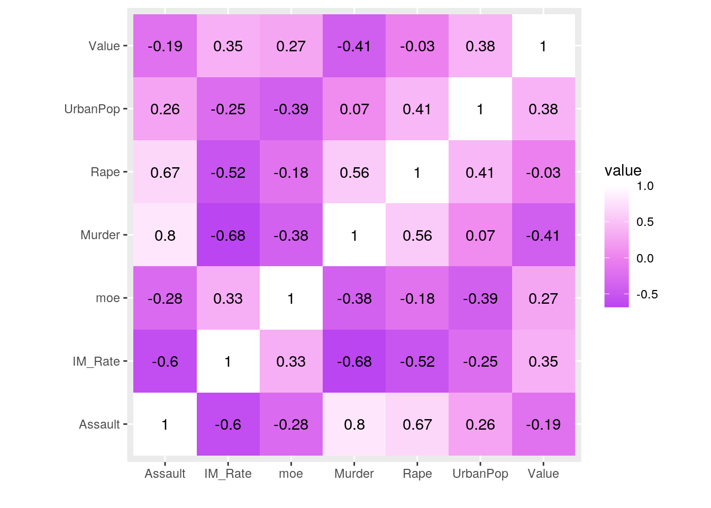
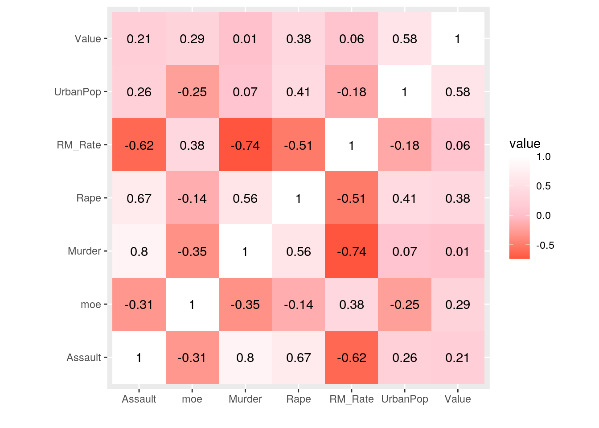
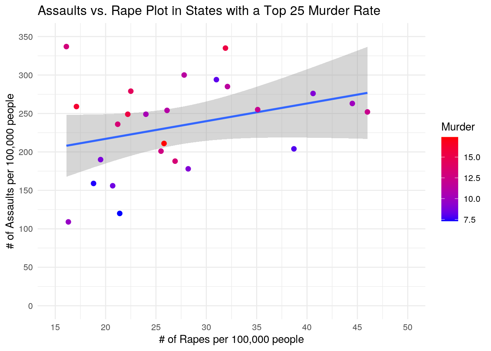
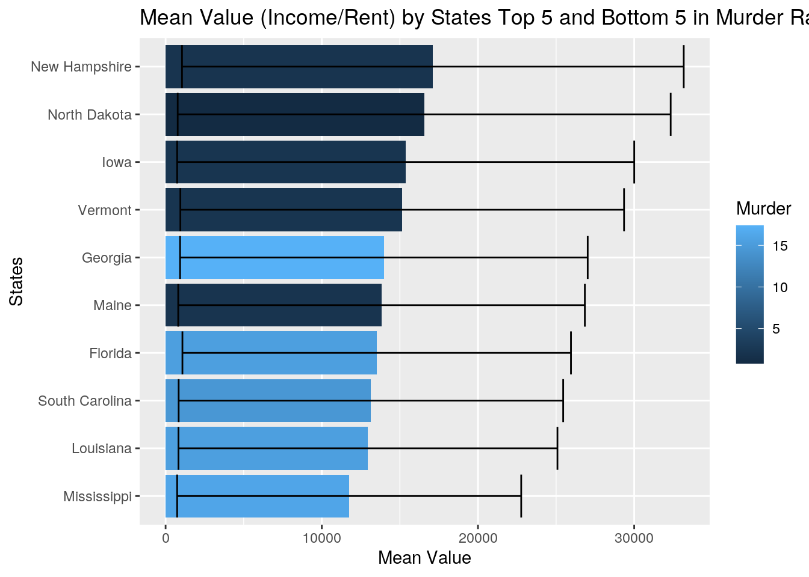
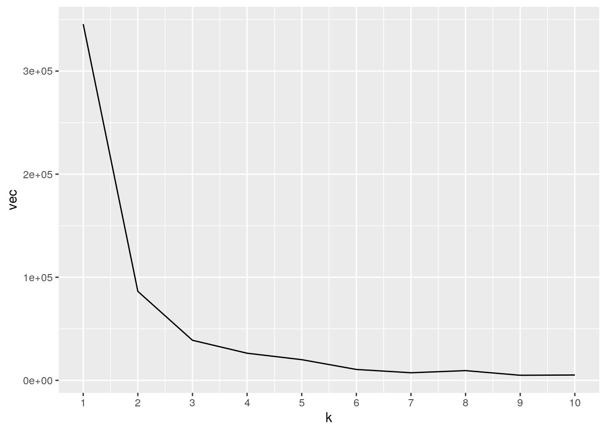
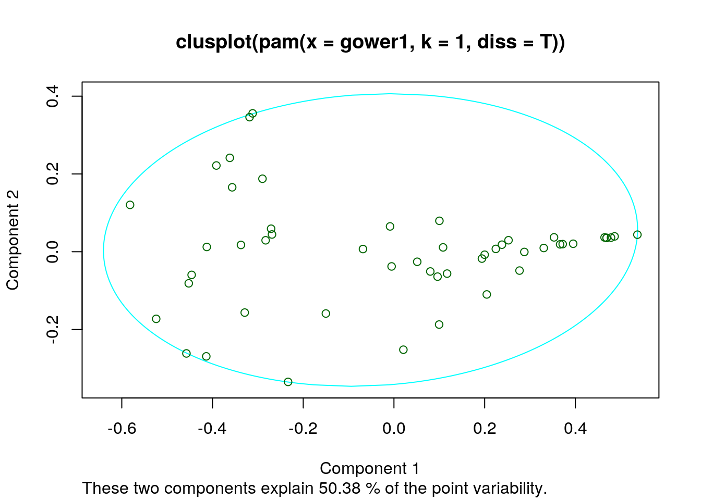
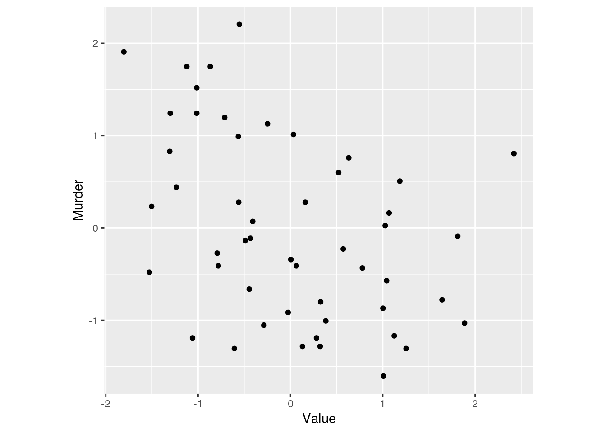
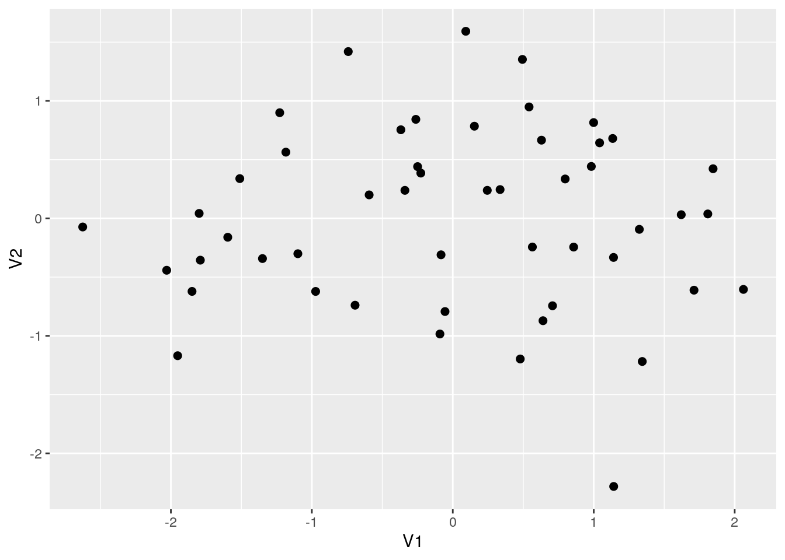

A knitted R Markdown document (ideally HTML) and the raw R Markdown file (as .Rmd) should both be submitted to Canvas by 11:59pm on the due date. These two documents will be graded jointly, so they must be consistent (i.e., don’t change the R Markdown file without also updating the knitted document).
The text of the document should provide a narrative structure around your code/output. All results presented must have corresponding code. Any answers/results/plots etc. given without the corresponding R code that generated the result will not be considered. Furthermore, all code contained in your final project document must work correctly (knit early, knit often)! Please do not include any extraneous code or code which produces error messages. (Code that produces warnings is acceptable, as long as you understand what the warnings mean!)
Find two (!) datasets with one variable in common (e.g., dates, times, states, counties, countries, sports players), both with at least 50 observations (i.e., rows) in each. Please think very carefully about whether it makes sense to combine your datasets! If you find one dataset with 50 patients and it has their age, and you find another dataset with 50 different patients that has their ages, it makes no sense to join them based on age (you would just be pairing up random people of the same age).
When combined, the resulting/final dataset must have at least 4 different variables (at least 3 numeric) in addition to the common variable (i.e., five variables total).
You can have as many variables as you would like! If you found two datasets that you like but they don’t have enough variables, find a third dataset with the same common variable and join all three.
If the datasets are not tidy, you will need to reshape them so that every observation has its own row and every variable its own column. If the datasets are both already tidy, you will make them untidy with pivot_wider()/spread() and then tidy them again with pivot_longer/gather() to demonstrate your use of the functions. It’s fine to wait until you have your descriptives to use these functions (e.g., you might want to pivot_wider() to rearrange the data to make your descriptive statistics easier to look at); it’s fine long as you use them at least once!
Depending on your datasets, it might be a good idea to do this before joining. For example, if you have a dataset you like with multiple measurements per year, but you want to join by year, you could average over your numeric variables to get means/year, do counts for your categoricals to get a counts/year, etc.
If your data sets are already tidy, demonstrate the use of pivot_longer()/gather() and pivot_wider()/spread() on all or part of your data at some point in this document (e.g., after you have generated summary statistics in part 3, make a table of them wide instead of long).
Join your 2+ separate data sources into a single dataset based on a common ID variable! If you can’t find a good pair datasets to join, you may split one main dataset into two different datasets with a common ID variable in each, and then join them back together based on that common ID, but this is obviously less than ideal.
Create summary statistics
Use all six core dplyr functions (filter, select, arrange, group_by, mutate, summarize) to manipulate and explore your dataset. For mutate, create a new variable that is a function of at least one other variable, preferably using a dplyr vector function (see dplyr cheatsheet). It’s totally fine to use the _if, _at, _all versions of mutate/summarize instead (indeed, it is encouraged if you have lots of variables)
Create summary statistics (mean, sd, var, n, quantile, min, max, n_distinct, cor, etc) for each of your numeric variables both overall and after grouping by one of your categorical variables (either together or one-at-a-time; if you have two categorical variables, try to include at least one statistic based on a grouping of two categorical variables simultaneously). If you do not have any categorical variables, create one using mutate (e.g., with case_when or ifelse) to satisfy the group_by requirements above. Ideally, you will find a way to show these summary statistics in an easy-to-read table (e.g., by reshaping). (You might explore the kable package for making pretty tables!) If you have lots of numeric variables (e.g., 10+), or your categorical variables have too many categories, just pick a few (either numeric variables or categories of a categorical variable) and summarize based on those. It would be a good idea to show a correlation matrix for your numeric variables (you will need it to make one of your plots).
Make visualizations (three plots)
stat="summary"Perform k-means/PAM clustering or PCA on (at least) your numeric variables.
Include all steps as we discuss in class, including a visualization.
If you don’t have at least 3 numeric variables, or you want to cluster based on categorical variables too, convert them to factors in R, generate Gower’s dissimilarity matrix on the data, and do PAM clustering on the dissimilarities.
Show how you chose the final number of clusters/principal components
Interpret the final clusters/principal components
For every step, document what your code does (in words) and what you see in the data!
Prerequisite: Finding appropriate data from at least two sources per the instructions above: Failure to do this will result in a 0! You will submit a .Rmd file and a knitted document (html/pdf).
data(us_rent_income)
data(USArrests)For my first data set I chose “us_rent_income” - a dataset with 5 different variables. The variables are the FIP state identifier, the name of the state, the median yearly income and median monthly rent, the estimated value, and the 90% margin of error (moe) value. The second dataset I chose was ‘USArrests" - a dataset with 5 different variables. The variables are the name of the state, the number of murder arrests per 100,000 people, the number of assaults arrests per 100,000 people, percent of the urban population, and the number of rape arrests per 100,000 people. The “USArrests” dataset was acquired from the ’datasets’ package in R Studio and the “us_rent_income” dataset was acquired from the ‘tidyr’ package in R Studio.
These two variables are interesting to me because I want to see if their is any relationship between a state’s income and/or rent and the incidence of crime in each of these states. I want to analyze this relationship in hopes of better understanding how rates of arrests correlate with income/rent levels. One relationship I expect to find is that lower levels of income will be correlated with higher rates of arrests across the board. I expect this because low income levels can lead people to engage in dangerous behaviors/acts in order to meet their needs.
tidyr functions pivot_longer/gather and/or pivot_wider/spread)library(tidyr)
us_rent_income2 <- pivot_wider(us_rent_income, names_from = "variable",
values_from = "estimate")
USArrests2 <- tibble::rownames_to_column(USArrests, "State")
(USArrests2)## State Murder Assault UrbanPop Rape
## 1 Alabama 13.2 236 58 21.2
## 2 Alaska 10.0 263 48 44.5
## 3 Arizona 8.1 294 80 31.0
## 4 Arkansas 8.8 190 50 19.5
## 5 California 9.0 276 91 40.6
## 6 Colorado 7.9 204 78 38.7
## 7 Connecticut 3.3 110 77 11.1
## 8 Delaware 5.9 238 72 15.8
## 9 Florida 15.4 335 80 31.9
## 10 Georgia 17.4 211 60 25.8
## 11 Hawaii 5.3 46 83 20.2
## 12 Idaho 2.6 120 54 14.2
## 13 Illinois 10.4 249 83 24.0
## 14 Indiana 7.2 113 65 21.0
## 15 Iowa 2.2 56 57 11.3
## 16 Kansas 6.0 115 66 18.0
## 17 Kentucky 9.7 109 52 16.3
## 18 Louisiana 15.4 249 66 22.2
## 19 Maine 2.1 83 51 7.8
## 20 Maryland 11.3 300 67 27.8
## [ reached 'max' / getOption("max.print") -- omitted 30 rows ]The “USArrests” dataset was already Tidy so I did not have to wrangle/pivot_longer/wider the dataset. I did however have to convert the row names - which were just the names of the states - into it’s own column called “States”. In the “us_rent_income” dataset, I did need to pivot_wider the ‘variables’ column to make ‘income’ and ‘rent’ into their own columns with each respective numeric estimate within each column.
dplyr join functionlibrary(tidyr)
library(dplyr)
alldata <- us_rent_income2 %>% full_join(USArrests2, by = c(NAME = "State")) %>%
slice(1:16, 19:102)
alldata## # A tibble: 100 x 9
## GEOID NAME moe income rent Murder Assault UrbanPop Rape
## <chr> <chr> <dbl> <dbl> <dbl> <dbl> <int> <int> <dbl>
## 1 01 Alabama 136 24476 NA 13.2 236 58 21.2
## 2 01 Alabama 3 NA 747 13.2 236 58 21.2
## 3 02 Alaska 508 32940 NA 10 263 48 44.5
## 4 02 Alaska 13 NA 1200 10 263 48 44.5
## 5 04 Arizona 148 27517 NA 8.1 294 80 31
## 6 04 Arizona 4 NA 972 8.1 294 80 31
## 7 05 Arkansas 165 23789 NA 8.8 190 50 19.5
## 8 05 Arkansas 5 NA 709 8.8 190 50 19.5
## 9 06 California 109 29454 NA 9 276 91 40.6
## 10 06 California 3 NA 1358 9 276 91 40.6
## # … with 90 more rowsI chose the full join option because I wanted to retain all of the variables in my datasets. Furthermore, I full_joined based on the name of the State - which was the easiest ways to join the two datasets. There were two states in the “us_rent_income” dataset that I had to remove. These were rows containing Puerto Rico and Distric of Columbia. They were removed because there was no corresponding State names in the “USArrests” dataset. One potential problem of this is that you lose these two rent/income amounts - which may skew the data in a particular direction. However, this makes it easier to look at the data because we can better analyze the relationship between the “USArrests” data with the “us_rent_income” data.
dplyr functions in the service of generating summary tables/statistics (12 pts)
summarize alone and with group_by (if you have more than 10 variables, fine to just focus on 10) (20 pts)
alldata2 <- alldata %>% pivot_longer(cols = c("income", "rent"),
names_to = "Variable", values_to = "Value") %>% na.omit()
subdata <- alldata2 %>% group_by(NAME) %>% filter(Variable ==
"income") %>% mutate(IM_Rate = Value/Murder) %>% arrange(desc(IM_Rate))
subdata2 <- alldata2 %>% group_by(NAME) %>% filter(Variable ==
"rent") %>% mutate(RM_Rate = Value/Murder) %>% arrange(desc(RM_Rate))
alldata2 %>% filter(Variable == "income") %>% summarize(mean_annual_income = mean(Value))## # A tibble: 1 x 1
## mean_annual_income
## <dbl>
## 1 28908.alldata2 %>% filter(Variable == "rent") %>% summarize(mean_annual_rent = mean(Value *
12))## # A tibble: 1 x 1
## mean_annual_rent
## <dbl>
## 1 11181.alldata2 %>% group_by(Variable) %>% filter(Variable == "income") %>%
summarize(mean_moe_income = mean(moe))## # A tibble: 1 x 2
## Variable mean_moe_income
## <chr> <dbl>
## 1 income 177.alldata2 %>% group_by(Variable) %>% filter(Variable == "rent") %>%
summarize(mean_moe_rent = mean(moe))## # A tibble: 1 x 2
## Variable mean_moe_rent
## <chr> <dbl>
## 1 rent 5.38alldata2 %>% summarize(n_States = n_distinct(NAME), n_GEOID = n_distinct(GEOID),
min_Assault = min(Assault), max_Murder = max(Murder), sd_UrbanPop = sd(UrbanPop),
median_Rape = median(Rape))## # A tibble: 1 x 6
## n_States n_GEOID min_Assault max_Murder sd_UrbanPop median_Rape
## <int> <int> <int> <dbl> <dbl> <dbl>
## 1 50 50 45 17.4 14.4 20.1subdata %>% select(NAME, Murder, Variable, Value, IM_Rate)## # A tibble: 50 x 5
## # Groups: NAME [50]
## NAME Murder Variable Value IM_Rate
## <chr> <dbl> <chr> <dbl> <dbl>
## 1 North Dakota 0.8 income 32336 40420
## 2 New Hampshire 2.1 income 33172 15796.
## 3 Iowa 2.2 income 30002 13637.
## 4 Vermont 2.2 income 29351 13341.
## 5 Maine 2.1 income 26841 12781.
## 6 Minnesota 2.7 income 32734 12124.
## 7 Wisconsin 2.6 income 29868 11488.
## 8 Connecticut 3.3 income 35326 10705.
## 9 Idaho 2.6 income 25298 9730
## 10 Rhode Island 3.4 income 30210 8885.
## # … with 40 more rowssubdata2 %>% select(NAME, Murder, Variable, Value, RM_Rate)## # A tibble: 50 x 5
## # Groups: NAME [50]
## NAME Murder Variable Value RM_Rate
## <chr> <dbl> <chr> <dbl> <dbl>
## 1 North Dakota 0.8 rent 775 969.
## 2 New Hampshire 2.1 rent 1052 501.
## 3 Vermont 2.2 rent 945 430.
## 4 Maine 2.1 rent 808 385.
## 5 Connecticut 3.3 rent 1123 340.
## 6 Iowa 2.2 rent 740 336.
## 7 Minnesota 2.7 rent 906 336.
## 8 Wisconsin 2.6 rent 813 313.
## 9 Idaho 2.6 rent 792 305.
## 10 Utah 3.2 rent 948 296.
## # … with 40 more rowsalldata3 <- alldata2 %>% inner_join(subdata)
alldata4 <- alldata2 %>% inner_join(subdata2)For my data I first pivoted_longer mydataset to remove NA’s as this made visualizing/grouping/filtering/etc., much easier to do. I first looked at the mean annual income and mean annual rent across the states - with the mean rent being much lower than I expected of $11,181.36. I then analyzed the Margin of error values (moe) for yearly income estimates (+/- $77.28) and monthly rent estimates (+/- $5.38). This data made sense because the estimates were larger for income and smaller for rent, and because yearly estimates have more margin for error than monthly estimates. Next, I looked at the standard deviation of the Urban Populations across states, the median rape per 100,000 people across states, the minimum number of assaults per 100,000 that occurred in the dataset (45), and the maximum number of murders per 100,000 people that occcured in the dataset (17.4), as well as the unique number of states/unique state identifiers (GEOID).
Lastly, I took two sets of subdata each containing a new variable. First, I wanted to look at the ratio of annual income to murders per 100,000 people, by state. North Dakota had the highestr Income to murder rate ratio as well as the highest rent to murder rate ratio. This is not all surprising given that North Dakota had the lowest murder rate of 0.8 per 100,000 people. Mississipi on the flip side had the lowest income to murder rate ratio and the lowest rent to murder rate ratio. Low income/rent values in Mississip as well as a relativley higher murder rate made this observation not very surprising. One interesting observation was that most of the states with the highest income/rent murder rate ratio were in the north east (New Hampshire, Vermont, Conneticut) and the upper mid west (North Dakota, Iowa, Minnesota, Wisconsin).
Create a correlation heatmap of your numeric variables the way we did in class
Create two more effective, polished plots with ggplot
library(ggplot2)
library(data.table)
require(tibble)
alldata3 %>% select_if(is.numeric) %>% cor %>% as.data.frame %>%
rownames_to_column %>% pivot_longer(-1) %>% ggplot(aes(rowname,
name, fill = value)) + geom_tile() + geom_text(aes(label = round(value,
2))) + xlab("") + ylab("") + coord_fixed() + scale_fill_gradient2(low = "purple",
mid = "violet", high = "white")
alldata4 %>% select_if(is.numeric) %>% cor %>% as.data.frame %>%
rownames_to_column %>% pivot_longer(-1) %>% ggplot(aes(rowname,
name, fill = value)) + geom_tile() + geom_text(aes(label = round(value,
2))) + xlab("") + ylab("") + coord_fixed() + scale_fill_gradient2(low = "red",
mid = "pink", high = "white")
alldata4 %>% select(NAME, Assault, Murder, RM_Rate, UrbanPop,
Rape) %>% arrange(desc(Murder)) %>% na.omit() %>% slice(1:25) %>%
ggplot(aes(x = Rape, y = Assault, color = Murder)) + geom_smooth(method = "lm") +
geom_point(size = 2) + ggtitle("Assaults vs. Rape Plot in States with a Top 25 Murder Rate") +
ylab("# of Assaults per 100,000 people") + xlab("# of Rapes per 100,000 people") +
theme_minimal() + scale_y_continuous(lim = c(0, 350), breaks = seq(0,
350, 50)) + scale_x_continuous(lim = c(15, 50), breaks = seq(15,
50, 5)) + scale_color_gradient(low = "blue", high = "red")
alldata2 %>% arrange(desc(Murder)) %>% slice(1:10, 91:100) %>%
ggplot(aes(x = reorder(NAME, Value), y = Value, fill = Murder)) +
geom_bar(stat = "summary", fun = mean) + geom_errorbar(stat = "summary",
fun.data = mean_se) + ggtitle("Mean Value (Income/Rent) by States Top 5 and Bottom 5 in Murder Rate") +
ylab("Mean Value") + xlab("States") + coord_flip()
In the first correlation matrix this specific matrix was looking at the Income to murder rate correlation values. In the second correlation matrix this specific matrices was looking at the Rent to murder rate correlation values. In both matrices, murder and assault both shared a strong positive correlation with one another (r = 0.8). I thought that the Urban population size percentage would also be positively correlated with the murder rate but this was not the case - in fact there was almost no correlation between the two (r = 0.07). The Income to murder rate was most negatively correlated with murder (r = -0.68) - meaning that as the Median income increased the murder rate decreased. The Rent to murder rate was also most negatively correlated with murder (r = -0.74). Lastly, there was no correlation between the murder rate and median rent (r = 0.01), however there was a weak negative correlation between the murder rate and income (r = -0.41).
In my first graph, I plotted the # of Assaults per 100,000 people and the # of rapes per 100,000 people in states who had a murder rate in the top 25. I wanted to see if there was any sort of correlation between the three variables - given that they are all negative outcomes. From what I could discern from the graph, there was a slight positive correlation between Assaults and Rapes when looking at states with a top 25 murder rate. States with high murder rates (> However, there states with higher assault rates had higher murder rates, which from the correlation matrix supports the data.
Lastly, I wanted to look at how the averaged values (Income/rent) differed across states who were top 5 and bottom 5 in murder rates. According to the barplot there does not appear to be any significant difference between the averaged values - given that the error bars overlap. However, the majority of states with a higher murder rate were more likely to have a lower Value than states with a low murder rate. The mean overall values were not much different from one another. Furthermore, Maine had a lower mean value than Georgia yet Georgia has a very high murder rate while Maine has one of the lowest. There could be many reasons for this difference such as more job opportunities in Georgia than Maine or a larger population - thus having a greater chance of having a high murder rate.
Either k-means/PAM clustering or PCA (inclusive “or”) should be performed on at least three of your variables (3 is just the minimum: using more/all of them will make this much more interesting!)
library(cluster)
sub2 <- alldata4 %>% select(Murder, Rape, Assault)
vec <- vector()
for (i in 1:10) {
sub3 <- sub2 %>% select(Murder, Rape, Assault) %>% kmeans(i)
vec[i] <- sub3$tot.withinss
}
ggplot() + geom_line(aes(x = 1:10, y = vec)) + scale_x_continuous(name = "k",
breaks = 1:10)
gower1 <- daisy(sub2, metric = "gower")
pam1 <- pam(gower1, k = 1, diss = T)
plot(pam1, which = 1)
sub4 <- alldata3 %>% select(Murder, Rape, Assault, UrbanPop,
Value)
sub4 = data.frame(scale(sub4))
ggplot(sub4, aes(x = Value, y = Murder)) + geom_point() + coord_fixed()
eig1 <- sub4 %>% select(Murder, Value) %>% cor %>% eigen()
eig1## eigen() decomposition
## $values
## [1] 1.4122814 0.5877186
##
## $vectors
## [,1] [,2]
## [1,] -0.7071068 -0.7071068
## [2,] 0.7071068 -0.7071068eig1$vectors## [,1] [,2]
## [1,] -0.7071068 -0.7071068
## [2,] 0.7071068 -0.7071068sub4_matrix <- sub4 %>% select(Murder, Value) %>% as.matrix
sub4_scores <- t(t(eig1$vectors) %*% t(sub4_matrix)) %>% as.data.frame
sub4_scores %>% ggplot(aes(V1, V2)) + geom_point(size = 2)
For my first dimensionality reduction I wanted to look at the kmeans cluster of three variables - Murder, Assault, and Rape. In order to determine the number of clusters that would work best for this data set and that was determined to be k = 1. From what I could discern from the first kmeans cluster - both principle components (PC1 and PC2) accounted for 50.38% of the variability found in the data set - which is rather impressive. Furthermore, there was only one cluster found. This is not surprising given that it was hard to group by states given their was only one observation per state. Nevertheless, there was not a very high goodness of fit given that there was not much clustering found in the dataset.
Lastly, I wanted to look at the PCA analysis between murder and value. I wanted to see if there was any underlying variance between these two variables that could explain variations in my data set. I obtained the proper eig%vector and eig%values for the data set. When analyzing the principle components there appeart to be a very weak negative corrlation between the two principle componets. States with high V1 scores generally have lower murder rates while states with low V1 scores have higher murder rates. This correlation is still very weak, however there does appear to be some relationship between the two variables. #### 6. Neatness, Holistic/Discretionary Points (5 pts)
## paste this chunk into the ```{r setup} chunk at the top of
## your project 1 .Rmd file
knitr::opts_chunk$set(echo = TRUE, eval = TRUE, fig.align = "center",
warning = F, message = F, tidy = TRUE, tidy.opts = list(width.cutoff = 60),
R.options = list(max.print = 100))OK, brace yourself!
You can choose ANY datasets you want that meet the above criteria for variables and observations. I’m just sitting here but off the top of my head, if you are into amusement parks, you could look at amusement-park variables, including ticket sales per day etc.; then you could join this by date in weather data. If you are interested in Game of Thrones, you could look at how the frequency of mentions of character names (plus other character variables) and the frequency of baby names in the USA…You could even take your old Biostats data and merge in new data (e.g., based on a Google forms timestamp).
You could engage in some “me-search”: You can request your Spotify data or download Netflix viewing activity, Amazon purchase history, etc. You can use your Google Fit/Fitbit/Apple watch data, etc. These can be combined (e.g., with each other, with other data sources).
You can make it as serious as you want, or not, but keep in mind that you will be incorporating this project into a portfolio webpage for your final in this course, so choose something that really reflects who you are, or something that you feel will advance you in the direction you hope to move career-wise, or something that you think is really neat. On the flip side, regardless of what you pick, you will be performing all the same tasks, so it doesn’t end up being that big of a deal.
If you are totally clueless and have no direction at all, log into the server and type
data(package = .packages(all.available = TRUE))This will print out a list of ALL datasets in ALL packages installed on the server (a ton)! Scroll until your eyes bleed! Actually, do not scroll that much… To start with something more manageable, just run the command on your own computer, or just run data() to bring up the datasets in your current environment. To read more about a dataset, do ?packagename::datasetname.
If it is easier for you, and in case you don’t have many packages installed, a list of R datasets from a few common packages (also downloadable in CSV format) is given at the following website: https://vincentarelbundock.github.io/Rdatasets/datasets.html (including types/numbers of variables in each)
A good package to download for fun/relevant data is fivethiryeight. Just run install.packages("fivethirtyeight"), load the packages withlibrary(fivethirtyeight), rundata()`, and then scroll down to view the datasets. Here is an online list of all 127 datasets (with links to the 538 articles). Lots of sports, politics, current events, etc: https://cran.r-project.org/web/packages/fivethirtyeight/vignettes/fivethirtyeight.html
If you have already started to specialize (e.g., ecology, epidemiology) you might look at discipline-specific R packages (vegan, epi, respectively). We will be using some tools from these packages later in the course, but they come with lots of data too, which you can explore according to the directions above
However, you emphatically DO NOT have to use datasets available via R packages! In fact, I would much prefer it if you found the data from completely separate sources and brought them together (a much more realistic experience in the real world)! You can even reuse data from your SDS328M project, provided it shares a variable in common with other data which allows you to merge the two together (e.g., if you still had the timestamp, you could look up the weather that day: https://www.wunderground.com/history/). If you work in a research lab or have access to old data, you could potentially merge it with new data from your lab!
Here is a curated list of interesting datasets (read-only spreadsheet format): https://docs.google.com/spreadsheets/d/1wZhPLMCHKJvwOkP4juclhjFgqIY8fQFMemwKL2c64vk/edit
Here is another great compilation of datasets: https://github.com/rfordatascience/tidytuesday
Here is the UCI Machine Learning Repository: https://archive.ics.uci.edu/ml/index.php
Here is another good general place to look: https://www.kaggle.com/datasets
To help narrow your search down or to see interesting variable ideas, check out https://www.tylervigen.com/spurious-correlations. This is the spurious correlations website, and it is fun, but if you look at the bottom of each plot you will see sources for the data. This is a good place to find very general data (or at least get a sense of where you can scrape data together from)!
If you are interested in medical data, check out www.countyhealthrankings.org
If you are interested in scraping UT data, the university makes loads of data public (e.g., beyond just professor CVs and syllabi). Check out all the data that is available in the statistical handbooks: https://reports.utexas.edu/statistical-handbook
Data.gov 186,000+ datasets!
Social Explorer is a nice interface to Census and American Community Survey data (more user-friendly than the government sites). May need to sign up for a free trial.
U.S. Bureau of Labor Statistics
Gapminder, data about the world.
…